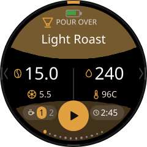
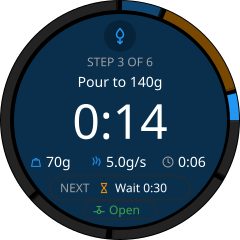
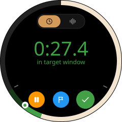
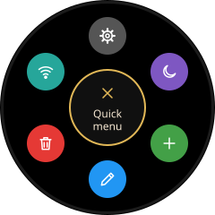
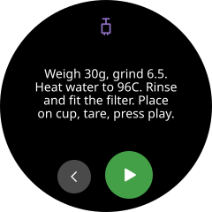
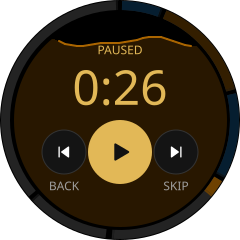
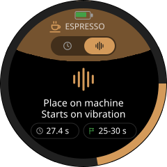
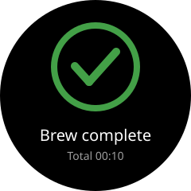

A pocket coffee timer and brew guide. Turn it to pick a method (pour-over, AeroPress, French press, Clever, Switch or espresso), then follow the brew ring step by step. It has an espresso shot timer and a recipe editor, plus its own Wi-Fi hotspot with a web page for recipes, settings, brew history and backups.

Pick a recipe

Follow each step

Time a shot

Quick menu
What you need
A Waveshare ESP32-S3-Touch-LCD-1.28 (the round 1.28" touch board with a motion sensor and battery charger).
A 3.7 V LiPo battery, 1200 mAh, size 103040 (10 × 30 × 40 mm). Check its connector and polarity against the board before plugging it in: they aren't standard. A protected cell is best.
The 3D-printed enclosure: print files and notes are on MakerWorld.
A USB-C cable that carries data, for installing and charging.
Plug the board into this computer with a USB data cable.
Press Install, pick the board in the list, then Connect.
Wait for it to finish (a minute or two), then unplug the board and plug it back in to start it.
Updating keeps your recipes, settings and brew history. To be safe, save a backup from the web page's Backup tab first.
If the board doesn't show up in the list, it may be asleep: hold its BOOT button while plugging it in, then try again. More in Help.
How to use it
Getting around
Brew Buddy has no buttons: everything is done by turning it and touching the screen.
Turn it
Each of its four sides picks a method. By default: Pour Over, Switch, AeroPress and Espresso. You choose which in Setup > Methods.
Swipe left / right
Next or previous recipe. You can also drag along the dots at the bottom edge.
Swipe up / down
Switch between 1 and 2 cups (or tap the 1 | 2 toggle).
Hold (0.8 s)
An amber ring fills, then the quick menu opens: Setup, Sleep now, New recipe, Edit, Delete and Wi-Fi.
Go back
Swipe right, tap the centre button, or tap outside the ring of icons.
Brewing
Pick a method and recipe. The screen shows the coffee and water weights, the grind and the water temperature.
Tap play. A preparation screen tells you what to weigh, grind and heat. When you're ready, put everything on your scale, tare it and tap play again.
After a short get ready countdown (5 s, changeable in Setup), the brew starts. The ring has one segment per step. The screen shows what to do now ("Pour to 140g"), the time left, the target weight and flow, and the next step.
Tap to pause. While paused you get Back, Resume and Skip. Swipe left to skip a step or right to go back one.
When it's done you see the total time. Tap to go back to the recipes. The brew is saved in the history.
Espresso
Turn Brew Buddy to the espresso side and choose a mode with the toggle at the top:
Auto (vibration): put Brew Buddy on the machine. It starts timing when the pump starts and stops when it stops. To set it up, use Setup > Espresso > Learn vibration: it listens to the machine while it's off for 2 s, then while you run a shot for 8 s. Learning also turns on Ignore first pump if your machine purges before the shot.
Manual (timer): tap start. While it runs you can pause, mark laps, and tap the green tick to finish the shot.
The timer turns green inside your target window (25 to 30 s by default) and red after it. Your last shot is shown on the espresso screen.
Recipes and settings
It comes with 48 recipes (with separate 1-cup and 2-cup versions) for pour-over, Switch, Clever Dripper, AeroPress and French press. From the quick menu you can edit a recipe or make a new one: coffee, grind, ratio, water, temperature and up to 10 steps.
Setup works the same way. Tap a section, then a setting, then drag round the edge of the screen to change its value (clockwise for more). Swipe up or down for bigger steps. Changes save themselves.
The web page (Wi-Fi)
Open the quick menu and tap Wi-Fi. Brew Buddy starts its own hotspot (BrewBuddy-XXXX) and shows a QR code.
Scan the QR code with your phone to join the hotspot. The page usually opens by itself. If it doesn't, go to http://192.168.4.1.
On the web page you can edit recipes, change settings, see your brew and shot history (and save it as a CSV), and download or restore a backup.
The screen also shows the network name and password. The hotspot gets a new password each time it starts. Tap Stop on the Wi-Fi screen to turn it off.
Battery and sleep
After a few minutes of not being used (5 by default), the screen dims and Brew Buddy goes into standby. Touch it or pick it up to wake it.
After a long standby (1 hour by default) it goes into deep sleep, which saves much more battery. Waking from deep sleep takes about a second.
Travel mode (Setup > Screen & Power) means only a double-tap wakes it, so it stays asleep in a bag.
Sleep now is in the quick menu.
Plug in USB-C to charge. A charging screen shows how full it is; tap to dismiss it.
More screens

Prepare

Paused

Espresso, auto

Done
The screen pictures are drawn from the firmware's layout, so they're close to the real thing but not exact.